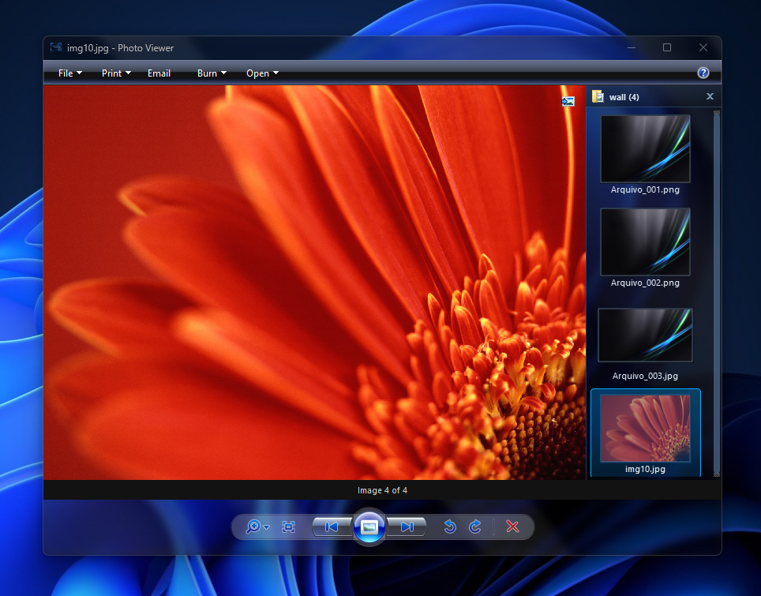
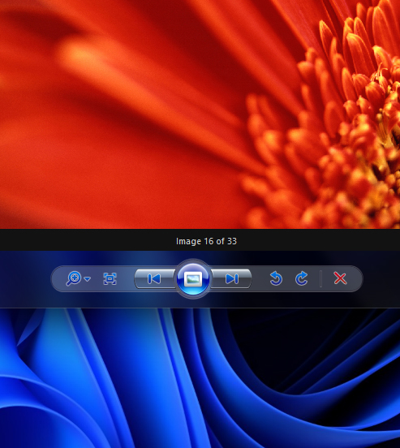

Photo Viewer for Windows
The Classic Windows Experience in a 10x Faster Modern Engine
Say goodbye to the sluggish Windows 11 Photos app and the format limitations of the legacy Windows 7 viewer. Open images instantaneously in 0.18s with authentic Aero Glass transparency, a retractable Windows Live filmstrip sidebar, native support for JPEG XL (.jxl), WebP, and animated GIFs, plus built-in batch renaming and image resizing tools.
Version: 1.4.6 (Build: 2026.11) • Native 64-bit Architecture

The Beauty of the Past, the Engineering of the Future
Relive the fast and direct interface that defined an era, supercharged with productivity features the original viewer never had.
6 Classic Themes & Aero Glass
Switch effortlessly between Classic, Windows Vista, Live Photo Gallery, and 3 Dark Mode themes, complete with authentic translucent Aero Glass borders on Windows 10 and 11.
10x Faster Modern Engine
Engineered in PyQt6 with smart caching, background neighbor preloading, and automatic EXIF orientation. Opens Full HD photos in 180ms and switches images in just 20ms.
Windows Live Vertical Sidebar
Inspired by the classic Windows Media Player and Live Photo Gallery toggle button: expand or collapse a translucent vertical thumbnail strip without obstructing your photo.
New: Native JPEG XL (.JXL) Engine
Ready for next-generation digital photography: decode static and animated JPEG XL (.jxl) images (HDR/Lossless) out of the box without Microsoft Store add-ons, alongside WebP, animated GIFs, and multi-layer .ICO/.TIFF.
Batch Rename (F2) & Resizer
Batch rename hundreds of photos with custom prefixes and collision-safe numbering (F2), or resize images by pixels, percentage, and HD/4K presets (Ctrl+R) without heavy editors.
Privacy & Smart USB Detection
100% telemetry-free operation. Features real-time USB Flash Drive detection in the Send To menu and smart email sharing compatible with both Webmail and desktop clients.
Native JPEG XL (.JXL) Support — No Microsoft Store Extensions Needed
JPEG XL (.jxl) is the official next-generation successor to JPEG: delivering up to 60% smaller file sizes with superior visual fidelity, Alpha transparency, HDR support, and animation. While the legacy Windows 7 viewer rejects the format entirely and Windows 11 requires extra Microsoft Store codec extensions, Cromak Photo Viewer v1.4.6 embeds a multi-threaded .jxl decoder directly inside the standalone engine:
.jxl files straight out of the box
.jxl natively
.jxl
Head-to-Head Comparison with the Original
See why Cromak Photo Viewer v1.4.6 is the definitive upgrade over both the legacy Windows 7 viewer and the bloated Windows 11 Photos app.
| Features & Performance | Legacy Photo Viewer (Win 7) | Windows 11 Photos App | Cromak Photo Viewer v1.4.6 |
|---|---|---|---|
| Startup & Switching Speed | Fast (Legacy COM/GDI+) | Slow (2s to 5s + Heavy UWP Runtime) | Instant (~0.18s / 20ms per photo) |
| Modern Formats (.JXL, .WEBP, .GIF) | Cannot open JXL/WebP; freezes GIFs | Requires Microsoft Store add-ons | 100% Native (JXL, WebP, GIF, ICO, TIFF) |
| Classic Themes, Dark Mode & Aero Glass | Bright white canvas only (No Dark Mode) | No classic themes / No Aero Glass | 6 Themes (Classic, Vista, Live, Dark + Aero) |
| Thumbnail Filmstrip Sidebar | None | Bottom overlay covering the image | Translucent Windows Live Vertical Sidebar |
| Batch Rename (F2) & Image Resizer | None | No batch rename tool | Built-in (F2 Batch + Ctrl+R HD/4K Presets) |
| Direct USB Drive Send-To & Webmail | MAPI Error without desktop Outlook profile | Forces Microsoft Account / OneDrive | Live USB Detection + Smart Webmail Fallback |
| Telemetry & Privacy | Offline (Disabled by default on Win 11) | Heavy telemetry & OneDrive cloud prompts | Zero Telemetry (100% Private & Free) |
Layout Overview
Click on any screenshot to expand and inspect every visual detail.
Classic Navigation
Playback, slideshow (F11), rotation, zoom, and deletion controls right where you remember them.

Windows Live Vertical Sidebar (New)
Retractable Aero Glass filmstrip panel that lists all folder images in real time without covering the main view.

6 Customizable Themes
Choose between Windows Classic, Vista, Live Photo Gallery, and three Dark Mode variations while preserving the original elegance.

Quick Context Menu
Quickly access options like copy, resize, batch rename, rotate, or set as desktop wallpaper straight from the right-click menu.

Smart File Integration
Associate classic and next-gen image formats (JPG, PNG, WEBP, JXL, GIF, BMP, ICO, TIFF) to open natively with a single click.

11 Real-Time Languages
Complete and instant localization across 11 global languages. Switch the interface language on the fly without restarting.

Full-Featured Toolbar
Top menu shortcuts to print with live preview, send directly to USB Flash Drives, share via email, or open in external editors.

Aero Glass Transparency
Bring back authentic translucent glass borders on the bottom bar and sidebar to Windows 10 and Windows 11 via native DWM integration.
High-Performance Engineering in PyQt6
-
Native Decoding + JPEG XL & Animated Formats
Effortlessly loads JPG, PNG, BMP, WEBP, JPEG XL (
.jxl), animated GIFs, and multi-page files (.ico/.tiff) with automatic EXIF orientation and smart on-demand pan cursor. -
Built-in Productivity (Batch, Resize & USB)
Features a 2-phase collision-safe batch renaming engine, a high-precision resizer using SmoothTransformation filtering, and real-time Win32 removable USB drive detection.
-
Non-Blocking Multithreaded Architecture
Directory scanning across thousands of photos, sidebar thumbnail generation, and adjacent image preloading run in dedicated background threads so the UI never freezes.
Fair Use and Transparency
This is an unofficial fan-made project for fans. It has no affiliation with Microsoft Corporation. Original trademarks and designs are the property of their respective owners. Our goal is historical preservation, accessibility, and productivity.
System Compatibility & 11 Native Languages
Compiled independently (Stand-Alone). Requires no Python installation, external codecs, or additional frameworks on your machine.
Download Now
Classic Photo Viewer v1.4.6 is a 100% free project. You can support ongoing development if you wish.
Personal Use (Freeware)
- Full v1.4.6 Software
- 6 Themes + Aero Glass + Live Sidebar
- Supports JXL, WebP, GIF, ICO & TIFF
- Batch Rename & Image Resizer
- Zero Telemetry & Ad-Free
Project Supporter
- The software is identical, but:
- You encourage new updates
- Helps keep the project and site alive
- Our eternal gratitude
Distributed with pride by Cromak Technology.